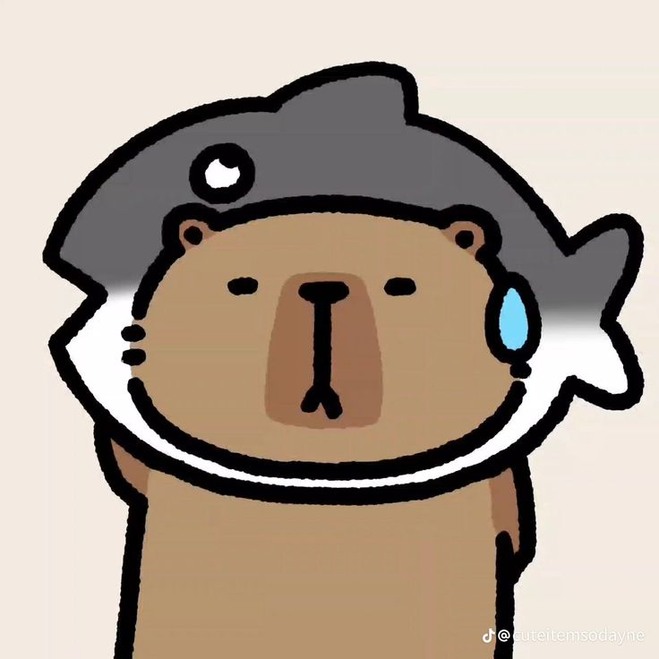

Cong Dinh

Summary
Dedicated IT professional with 5+ years of experience in network administration and cybersecurity.
Seeking to leverage my expertise in system optimization and security protocols to contribute to the success of NFQ Asia Company.
Education
Bachelor of Computer Network and Communication Faculty
Can Tho University, VietNam
Graduated: May 2018>
Experience
- 2026: Lecturer
Computer Network and Communications Faculty, Can Tho University, VietNam.
- Developed and implemented network security protocols, reducing breaches by 40%.
- Managed a team of 5 IT support staff, improving response times by 25%.
- Conducted regular system audits and maintenance, reducing downtime by 30%.